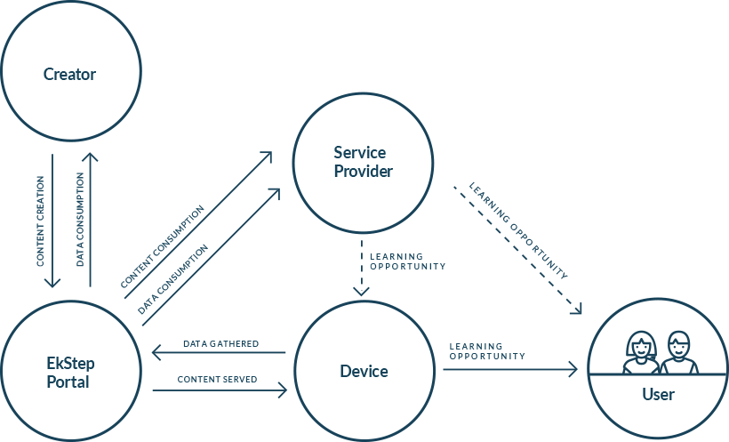

The lack of access to learning opportunities is a complex and multidimensional problem. It impacts the lives of millions of children on a daily basis. Through a collaborative, universal platform that any person can use, we can together fearlessly reimagine learning opportunities for every child.
Approach
The EkStep platform infrastructure and tools increases access to learning opportunities by facilitating interactions between content creators, learning facilitators, organisations and the learner across contexts and types of content
EkStep Platform for a primary level Learner is an application ('Genie') with learning content in numeracy and literacy (Indian languages and English) currently available on handheld Android devices. In the future, it would be available across diverse media.
- Stories, worksheets, simulations, games and activities.
- Interactivity for learning.
- Enables choice, exploration and feedback.
A learning facilitator is a teacher, parent or a volunteer interested in enabling learning. The 'Genie' application, currently available on Android devices will have content in numeracy and literacy (Indian languages and English).
- Access to varied content for primary level learners.
- Interactive activities and content to determine learning levels.
- Insight into progress of learners.
A school, a tuition centre, government or a not for profit initiative can use the EkStep Portal to access a modular set of utilities and tools for diverse use.
- Configurable learning content to suit varied needs, capabilities and infrastructure.
- Collaboration to amplify expertise and capacities to better serve learning needs.
- Data and analytics on learning and usage patterns at scale.
Educationists, authors and content developers can create or plug learning content in numeracy and literacy (stories,worksheets, simulations, games) on to the EkStep Platform through the EkStep Portal.
- Tools for creation of relevant and contexualised content.
- Templates for learning activities (in numeracy and literacy).
- Insights on usage of content, content needs and learning levels of children.
EkStep Model
EkStep enables interactions within an ecosystem to create learning opportunities
Content Creation
Numeracy and Indian languages namely stories, games, simulations, videos, exploratory and practice content.
Content Consumption
Content consumed by learning facilitators, children, across digital and non-digital platforms both offline and online.
Data Consumption
Data and analytics used by ecosystem with insights into learner actions, learning gaps and the consumption of content.